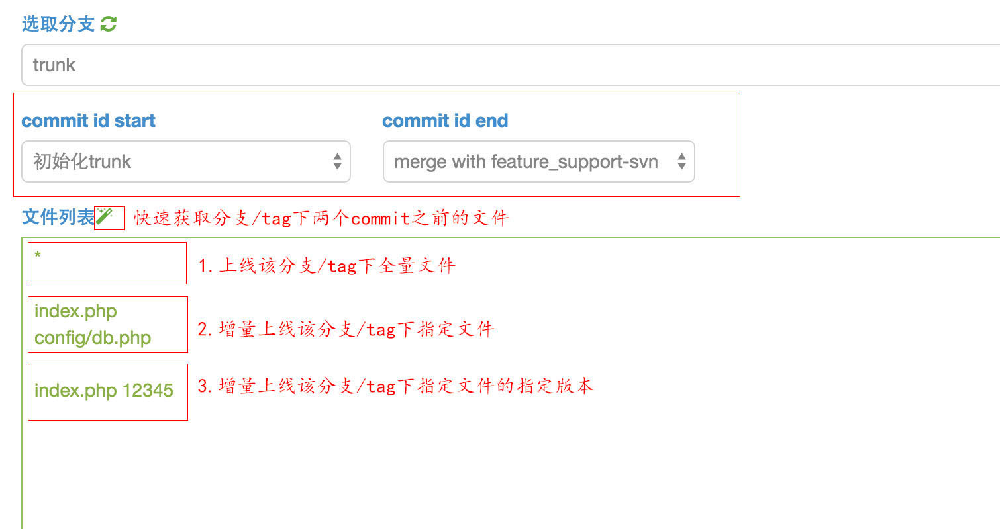

提交上线单 改进本文 上线单包括两种方式：git和svn 一、git 项目提交上线单 二、svn 项目提交上线单svn上线单与git类似，但有些区别，会有全量上线和增量上线两种主要形式，增量上线支持指定文件的版本号。分别看下可以有哪些格式填写上线单： 上线全量文件 * 增量上线指定文件 file_name1file_name2 增量上线指定文件的指定版本 file_name1 commit_idfile_name2 commit_id 